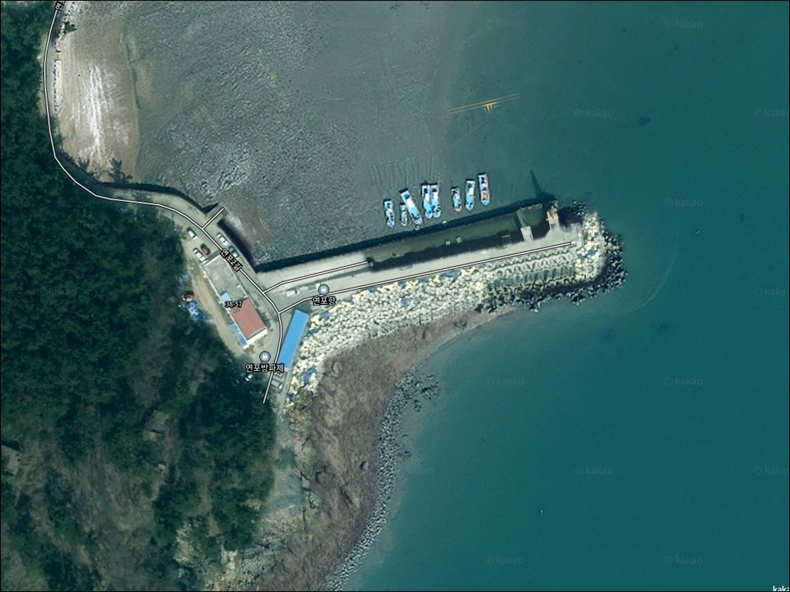
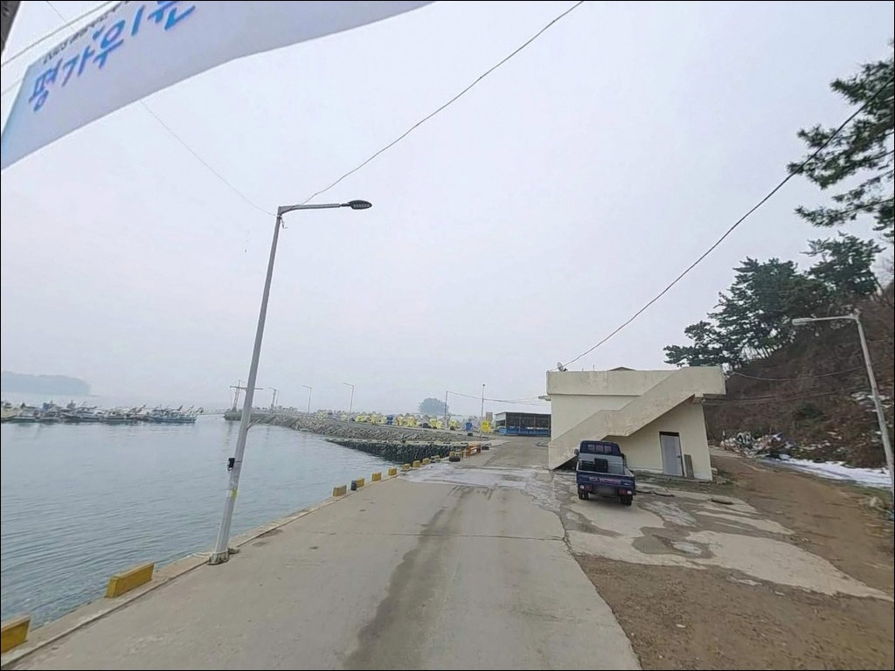
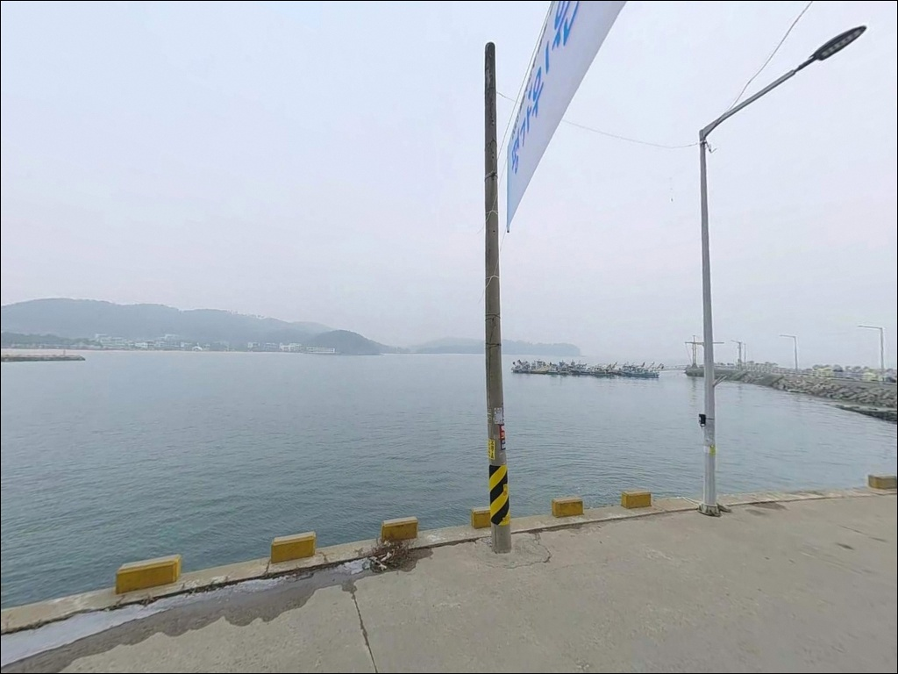
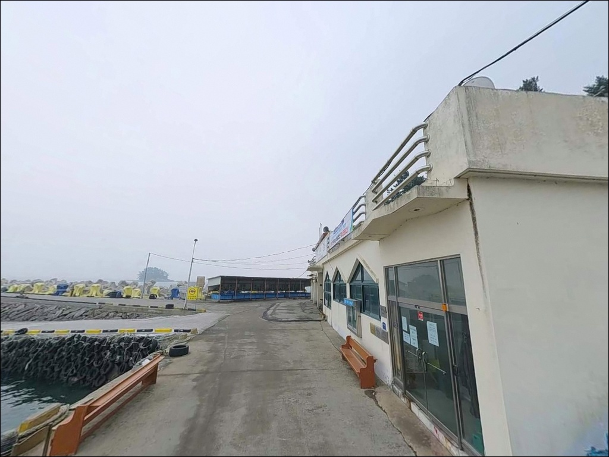
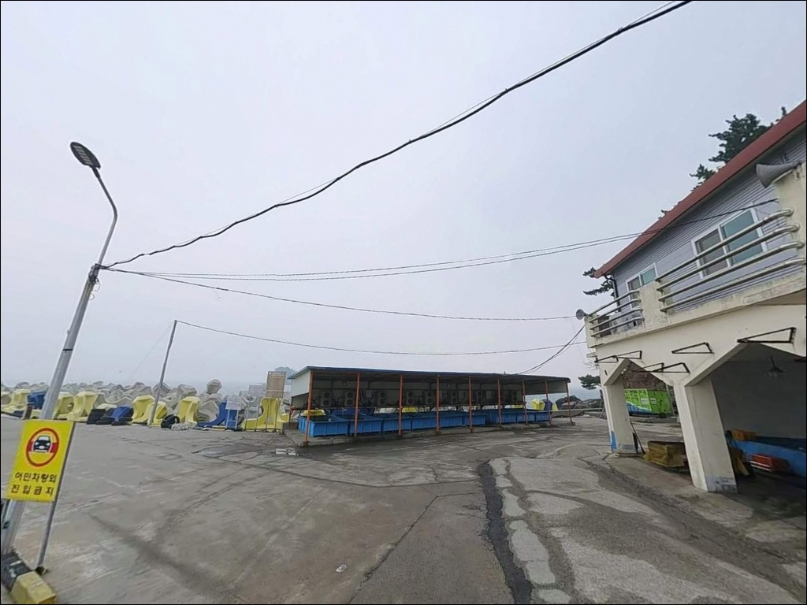
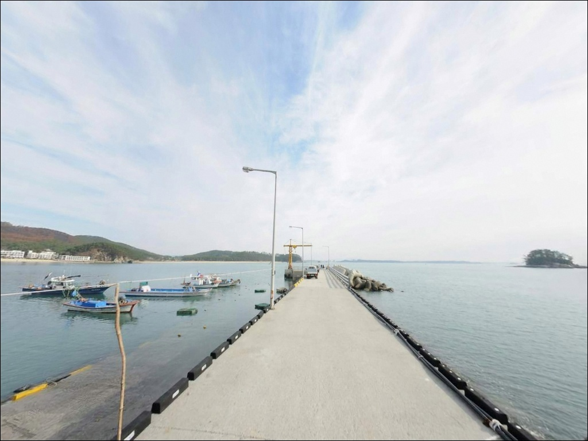
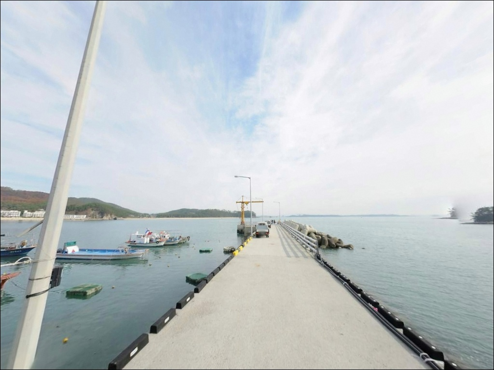
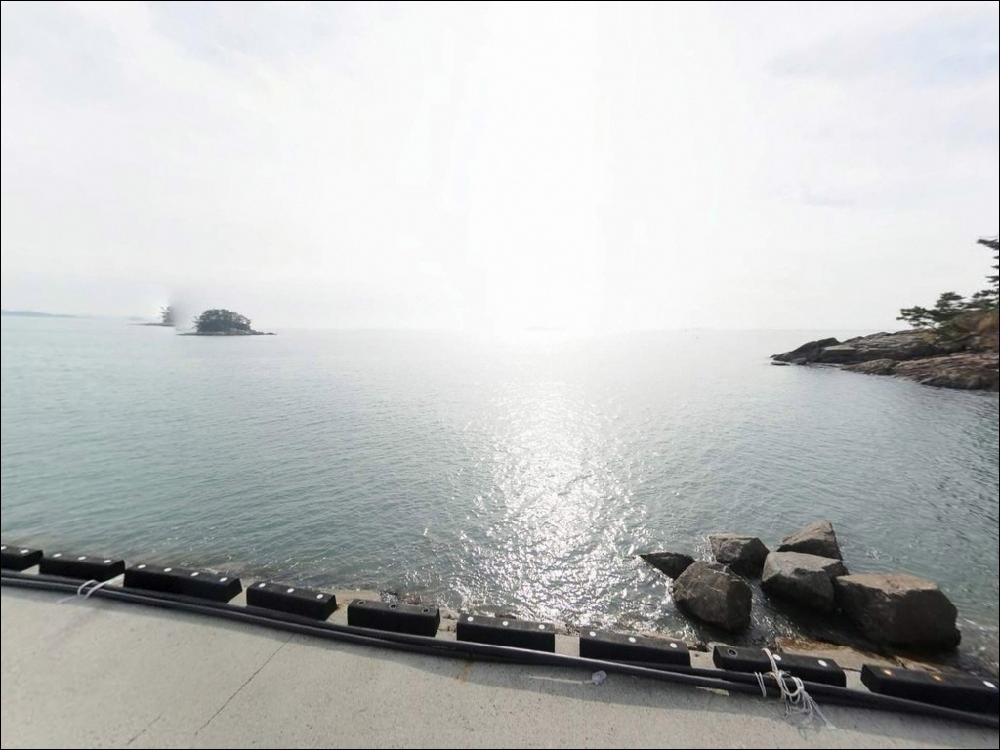
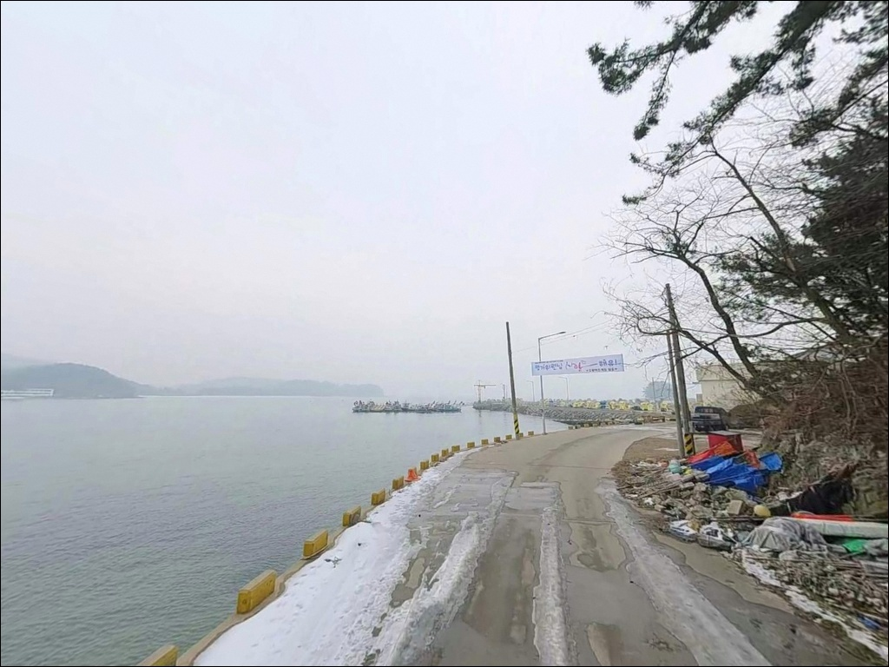

연포항 (연포방파제), 충남 태안군 노을이 아름다운 차박, 낚시 명소
이 페이지에는 광고(제휴 링크 포함)가 있으며, 광고 링크를 통해 구매하면 운영자가 판매 수익 또는 수수료를 받을 수 있습니다. 포인트 사진: 카카오맵 스카이뷰·로드뷰. 이 페이지의 지도·사진 이미지는 카카오맵의 실제 서비스 이미지와 다를 수 있습니다.


포인트 안내
연포항
충남 태안군 근흥면 도황리 1525-223
연포항에서 가장 자주 일어나는 실수는
물때를 확인하지 않고 찾아가는 것입니다.
서해 특성상 조수간만의 차가 크고,
소형 항구 내항은 간조가 되면 바닥이 드러나는 구간이 생겨
낚시 가능한 구간 자체가 크게 줄어드는 구조입니다.
자리는 있어도 채비를 던질 수심이 사라진 상황이
물때를 건너뛴 방문에서 자주 발생합니다.
이 글은 연포항의 진입 여건, 지형 기반 낚시 가능 구간,
어울리는 낚시 스타일과 차박 체류 조건에 집중합니다.
조황 단정이나 특정 어종 보장은
이 글의 범위에 포함되지 않습니다.

1. 진입 동선과 포인트 접근 여건
연포항은 연포해수욕장으로 향하는 도황리 해안 접근로를 따라
진입하는 구조입니다.
관광지와 연계된 도로라 전 구간 포장도로가 이어져 있으며,
일반 승용차 기준으로는 접근에 별 어려움이 없습니다.
다만 소규모 어촌정주어항 특성상
항 내부는 공간이 넉넉하지 않습니다.
대형 SUV나 캠핑용 차량이라면
회차 공간이 제한될 가능성이 있어
출발 전 지도로 진입로를 확인하는 편이 좋습니다.
방파제 연장 및 회차로 확폭 공사가 진행된 이력이 있어
항 내부 구조가 달라졌을 수 있으니
현장 확인도 함께 권장합니다.
주차는 연포해수욕장 공영주차장 인근이
가장 현실적인 후보입니다.
항구 선착장 주변 소규모 공간도 있을 수 있으나
어선 작업 동선과 혼재될 가능성이 높아
자리를 잡기 전에 어선 이동 여부를 먼저 확인해야 합니다.

2. 차박 여건과 야간 체류 조건
연포해수욕장과 바로 붙어 있는 위치 특성상,
항 주변에는 펜션과 민박이 산재해 있습니다.
야간에도 주변 숙소 불빛과 가로등이 일부 남아 있어
완전히 어두운 환경과는 다릅니다.
여름 성수기에는 차량 통행과 관광객 소음이 많아
조용한 야간 차박 환경을 기대하기 어렵습니다.
비수기 상황은 다릅니다.
관광객이 빠진 시기에는 해수욕장 일대가 한적해지고,
공영주차장 인근에서 야간 체류 여건이 형성될 수 있습니다.
단, 주차 허용 여부는 현장 안내판을 직접 확인해야 하며
이 글에서 단정할 수 없는 항목입니다.
연포항은 차박을 메인으로 삼기보다
낚시를 중심에 두고 인근 숙소를 베이스로 삼는
1박 출조 방식이 현실적으로 잘 맞는 포인트입니다.
서쪽으로 열린 해안 구조상
서풍 계열 바람이 강할 때 파도 영향을 받는 편이라
기상 예보 확인은 출발 당일 한 번 더 챙기는 것이 좋습니다.


3. 주변 편의시설 및 이용 가능 인프라
연포항에서 가장 가까운 인프라는
연포해수욕장 일대에 집중되어 있습니다.
해수욕장 인근 연포2길 일대에 식당이 위치하고 있어
출조 전후 식사 해결이 가능한 편입니다.
단, 비수기에는 영업 여부가 달라질 수 있어
방문 전 운영 확인을 권장합니다.
편의점이나 마트는 반경 3km 이내 확정 정보가 없습니다.
출발 전 지도 검색으로 위치를 따로 확인해 두는 편이 좋고,
식수와 기본 소품은 출발 전에 갖춰서 가는 것이
현실적인 준비입니다.
주유소와 약국 등 기본 생활 인프라는
태안군 근흥면 소재지 방향으로 이동하면
반경 10km권에서 해결할 수 있습니다.
반경 10km권에 안흥내항이 있어,
낚시점과 선상낚시 출조 인프라가 필요하다면
안흥항 방향이 현실적인 이동 목적지가 됩니다.

4. 방문 전 챙겨야 할 준비사항
연포항 방문 전 가장 먼저 확인할 것은 물때입니다.
서해 소형 항구 특성상 조수간만의 차가 크고,
간조 시에는 내항 쪽 수심이 급격히 낮아지는 구간이 생깁니다.
바다타임에서 태안 근흥면 기준 물때를 미리 확인하고,
만조 전후 2~3시간 타이밍을 낚시 가능 구간으로 잡는 것이
이 포인트 방문의 기본 전략입니다.
기상 확인도 필수입니다.
연포해수욕장 일대는 서쪽으로 개방된 해안선 구조라
서풍 계열 바람이 강할 때는 파도와 너울 영향을 받는 편입니다.
출조 당일 아침 기상청 해상 예보를 한 번 더 확인하는 것이
쓸모없는 이동을 막는 방법입니다.
서해 조간대는 간조 시 바닥이 빠르게 드러나기 때문에
방파제 끝단 진입 이후 퇴로를 항상 염두에 두어야 합니다.
야간 낚시라면 헤드랜턴은 기본이고,
방파제 끝단과 테트라포트 구간에서는
구명조끼를 반드시 착용해야 합니다.
방파제 난간이 없는 구간에서의 야간 이동은
발밑 시야 확보가 최우선입니다.

5. 물때에 따라 낚시 여건이 달라지는 지형 구조
연포항은 연포해수욕장 모래 해변과 연결되는 지형 위에
물양장과 방파제가 놓인 구조입니다.
어촌정주어항이란 국가어항·지방어항보다 규모가 작은
소규모 지역 밀착형 어항을 뜻합니다.
항 내부는 모래 바닥 기반의 얕은 수심 구간이 이어질 가능성이 있으며,
방파제 끝단으로 갈수록 상대적으로 수심이 깊어지는
서해형 소형 항구 구조입니다.
만 안쪽 구조라 조류 자체가 강하지 않을 가능성이 있으나,
방파제 외항 방향으로는 어느 정도 조류 흐름이 남아 있는 편입니다.
이 흐름이 방파제 끝단과 수로 입구 구간에서
변화 구간을 만들어내며,
수심 변화 구간과 조류 꺾이는 지점이
이 포인트에서 가장 주목할 낚시 자리가 됩니다.
방파제 끝단과 외항 캐스팅 라인이 이 포인트에서
조류 영향을 가장 잘 받는 구간입니다.
해수욕장 모래 해변이 인접해 있어
백사장 원투 여건도 함께 검토할 수 있습니다.
바닥은 사질과 여(암초) 혼합 가능성이 있어
루어 바닥 공략에도 어울리는 구조입니다.
내항과 외항 어느 쪽을 선택하느냐에 따라
적합한 낚시 방식이 달라지므로
입장 전 외항 쪽 수심 여건을 먼저 살피는 것이 좋습니다.
최신 조황은 가기 전에 꼭 검색해 보시기 바랍니다.


6. 연포항에 어울리는 낚시 스타일
원투낚시는 이 포인트에서 가장 무난한 선택입니다.
원투낚시란 무거운 봉돌을 이용해 원거리를 캐스팅하고
바닥층 어종을 노리는 낚시 방식입니다.
해수욕장과 이어지는 사질 지형은 원투낚시와 궁합이 좋고,
물양장 끝단에서 외항 방향으로 채비를 보내는 방식도
시도해볼 수 있습니다.
우럭, 노래미, 붕장어, 도다리, 광어 등이
이 지형에서 기대해 볼 수 있는 어종입니다.
루어낚시도 어울리는 방식입니다.
사질 + 여 혼합 가능성이 있는 바닥 구조는
광어·우럭 계열 바닥 공략에 유리한 편이며,
방파제 끝단과 외항 방향을 중심으로
바닥층을 천천히 긁는 방식이 이 지형 조건에 잘 맞습니다.
농어 루어는 해수욕장 쪽 백사장 서프 구간에서
병행해볼 수 있는 스타일이기도 합니다.
에깅이란 갑오징어·무늬오징어를 대상으로
에기(인조 미끼)를 사용하는 루어낚시 방식입니다.
봄부터 가을 시즌에는 방파제 끝단
수심이 확보되는 외항 방향에서 탐색해볼 수 있습니다.
계절과 조황에 따라 결과 편차가 크므로
단독 목적보다는 원투나 루어와 병행하는 방식이
이 포인트에서 현실적입니다.

7. 대안 포인트와 플랜 B 동선
연포항이 기대에 못 미칠 때 같은 근흥면 해안선에서
가장 먼저 검토할 후보는 채석포항입니다.
연포항에서 북쪽으로 인접한 소형 어항으로,
비슷한 지형 구조 안에서 다른 여건을 탐색해볼 수 있습니다.
분위기가 한적한 편이라
조용한 생활낚시 포인트를 선호하는 낚시인에게
잘 맞는 대안입니다.
안흥내항은 이 권역에서 가장 안정적인 대안입니다.
연포항에서 차량으로 15~20분 거리에 위치하며,
선상낚시 출조 인프라와 낚시점이 갖춰져 있습니다.
연포항을 처음 방문하는 경우라면
안흥항을 기점으로 잡고
연포항을 서브 포인트로 묶는 동선이
실패 확률을 줄이는 방법입니다.
신진도 일대도 검토해볼 만합니다.
갯바위와 방파제가 다양하게 분포해 있어
루어낚시와 에깅 선호 낚시인에게
선택지가 더 넓은 편입니다.
연포항 → 안흥항 → 신진도로 이어지는 동선이
이 권역에서 범위 있는 플랜 B가 됩니다.

물때 하나 챙기면 달라지는
서해 소형 항구 낚시 포인트
원투낚시나 루어낚시를 부담 없이 즐기고 싶은 낚시인에게
연포항은 잘 맞는 구조입니다.
해수욕장 모래 해변과 방파제를 함께 활용할 수 있어
한 자리에서 여러 방식을 시도해볼 수 있고,
인근 식당과 숙박 인프라가 가까워
당일·1박 출조 모두 무리 없이 계획할 수 있습니다.
반면 대형 포인트 수준의 조과나 깊은 수심을 기대하고 찾아간다면
규모 면에서 기대에 못 미칠 수 있습니다.
물때 확인, 기상 체크, 성수기 주차 여부 파악—
이 세 가지를 갖추고 들어간다면
연포항은 헛걸음 없는 서해 방파제 출조지가 됩니다.
비수기 조용한 해수욕장 앞에 차를 대고
물때에 맞춰 방파제에 채비를 던지는 하루라면,
낚시와 바다 차박을 함께 즐기기에
나쁘지 않은 선택입니다.